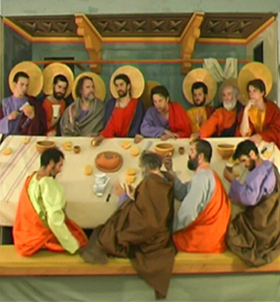

MaestÀ
Andy Guerif – Frankreich 2015
60 min – HD – ohne Dialoge
B: Andy Guerif – K: Steven Le Guellec – S: Cécile Pradere – T: Gwenn Labarta
German Premiere
The great work of the Sienese artist Duccio di Buoninsegna painted at the turn of the 14th century, a huge polyptych with Mary in majesty, La Maesta.
What to do with such a monument today? That is the project here: tracing possibilities, from painting to cinema, from Gothic narrative to contemporary imagery. The filmmaker concentrates on the 26 back panels of this abundant monumental altarpiece narrating the Passion of Christ. And we are caught in the picture, its movement, following, from one vignette to the next, the unusual and complex inner journey of the painting. Sequences follow of the Passion reinterpreted in succession. Meticulously restored, the decors, initially empty of characters, one by one come alive from the hubbub of those who settle there, and then, a miracle: a fixed image. And, again, everybody quits the scene to go on to the next vignette. There is a double movement of memory and projection where the split-screen editing converses with the narrative device of the trecento in which, from one image to another, the figures of time and event collide. From another time and contemporary. – FID Marseille
friday 9 oct 6.30 pm filmmuseum münchen
Guérif Andy was born in Angers in 1977. He is a French Filmmaker and Visual Artist. He loves Art. He loves it so much to practice it (with videos, in particular) and more recently with books.